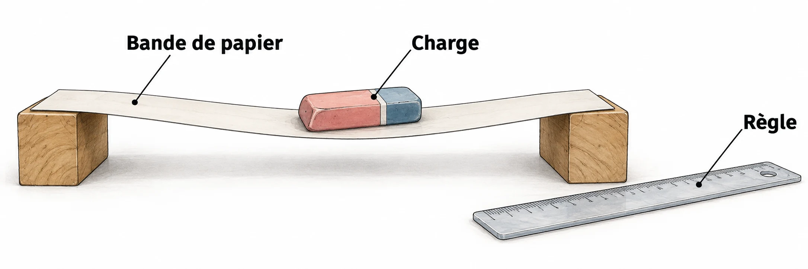

OBSERVER · EXPÉRIMENTER · EXPLIQUER
La forme change la résistance
Garde le même matériau. Fais varier la charge et la forme dans le domaine du modèle.

✎ Garde ta feuille à côté de toi.Ordinateur : manipulations et mesures simulées. Papier : relevés, réponses, calculs et croquis. Matériel réel : essai complémentaire si disponible.
Des observations pour expliquer
- Q1–Q3 : relève les flèches et trace les deux courbes sur papier.
- Q5–Q6 : compare les essais fournis ou réellement effectués et explique les écarts.
Appuie ton explication sur une valeur, un changement observé ou une comparaison. Distingue ce que montre le modèle et ce qui reste à vérifier.